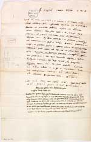
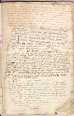
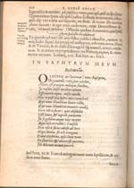
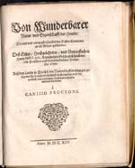

Justus Lipsius 1606 – 2006
Samenstelling: Jeanine de Landtsheer en A.Th. Bouwman
De webpresentatie behandelt de volgende onderwerpen:
12. Lipsius in brieven (II)
|
12.1 || Brief van Lipsius aan Carolus Clusius, gedateerd 8
februari 1605. Manuscript. [Vulc. 101 ]. –– Blijkens deze brief zond Lipsius op de dies natalis van de Leidse universiteit Clusius een exemplaar van zijn pas verschenen Monita et exempla en informeert hij naar Clusius’ Exotica. Op deze originele brief heeft Clusius een kopie genoteerd van een latere brief van Lipsius (d.d. 13.10.1605), waarin deze hem dankt voor het exemplaar van de Exotica dat hij mocht ontvangen. |
|  |
12.2 || Briefkopieën voor eigen gebruik. [Lips. 3: 12]. –– Bladzijden 2v-3r bevatten kopieën door Lipsius én door zijn secretarissen. Linksboven en rechtsonder zijn twee secretarissen aan het werk geweest; tussenin heeft Lipsius zelf heel slordig gekopieerd. De nieuwe secretaris (onderaan rechts) kon het geschrift van de meester niet altijd goed lezen en liet blanco’s. Die zijn door Lipsius aangevuld. Links boven deze brief in het geschrift van Burmannus een verwijzing naar de gedrukte versie ervan in de Centuriae. |
|  |
|
12.3 || J. Lipsius, Epistolarum selectarum centuria tertia ad Belgas. Antwerpen: J. Moretus, 1602. [1371 A 26: 6]. –– Opengelegde Centuria (klein 4º), met Lipsius brief aan F. Rubens over de dood van zijn hond, gedateerd 29 augustus 1601. |
|  |
12.4 || J. Lipsius, Von wunderbarer Natur und Eygenschafft der Hunde. Die vier und vierzigste Epistel der Ersten Centurien an die Belgas. Ausz dem Latein in Teutsch den Narrenköpffen entgegen gesetzt [...] a Canisio Procyone. [S.l.], 1614. [THYSIA 1378: 3]. –– Een aantal van Lipsius’ essaybrieven ging een eigen leven leiden. Hier bij wijze van voorbeeld de Duitse vertaling van de hondenbrief. |
|  |
| vorige pagina | volgende pagina |